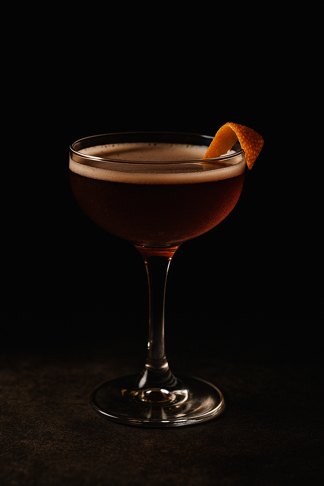
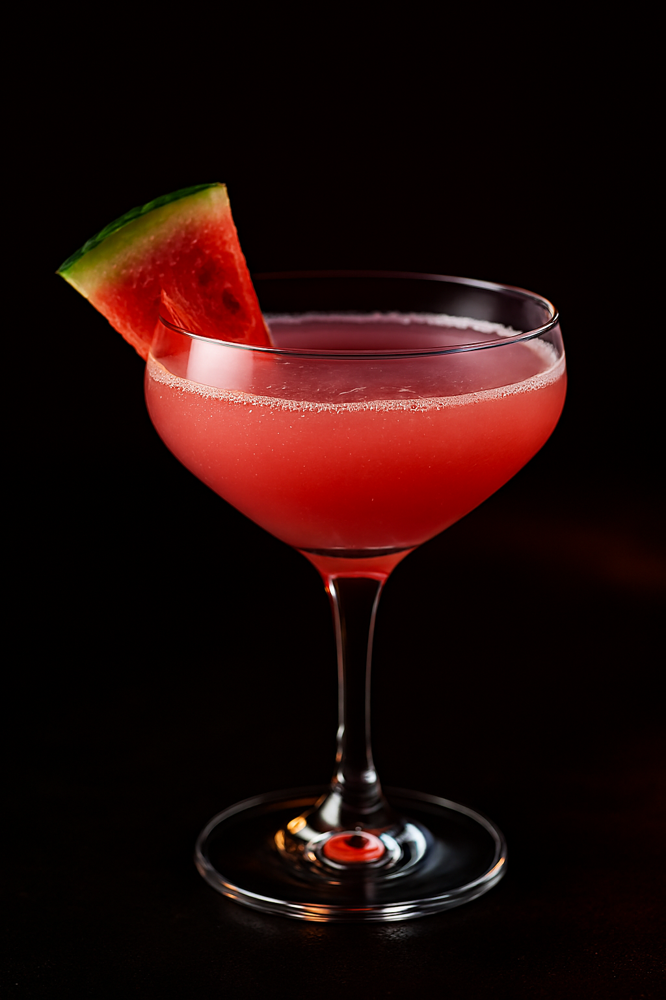
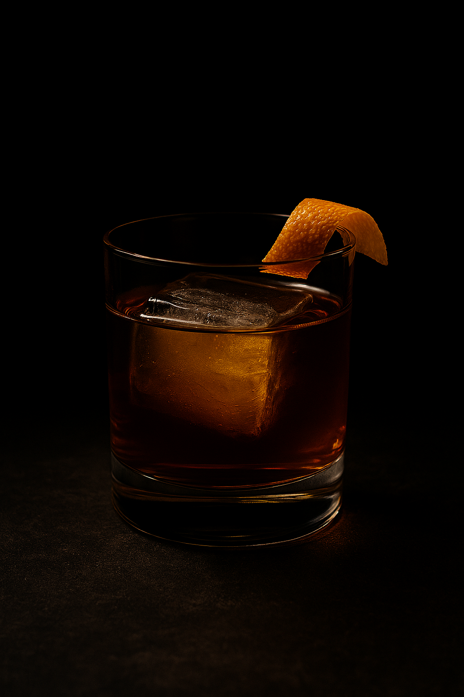
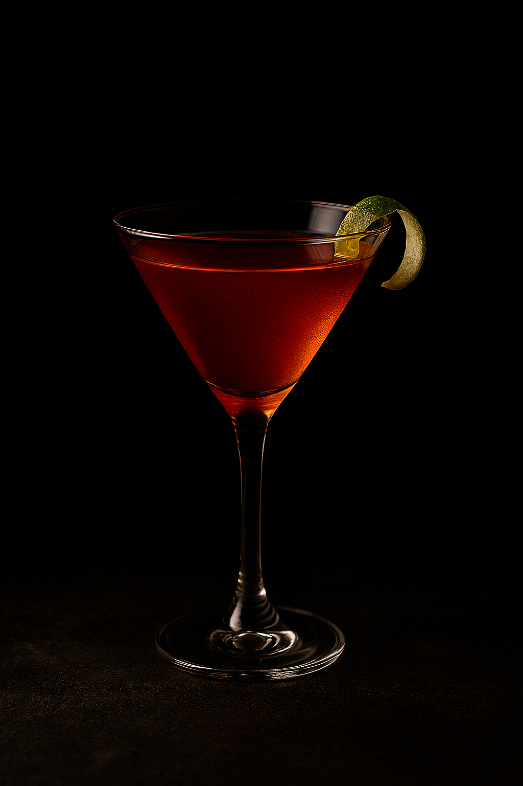
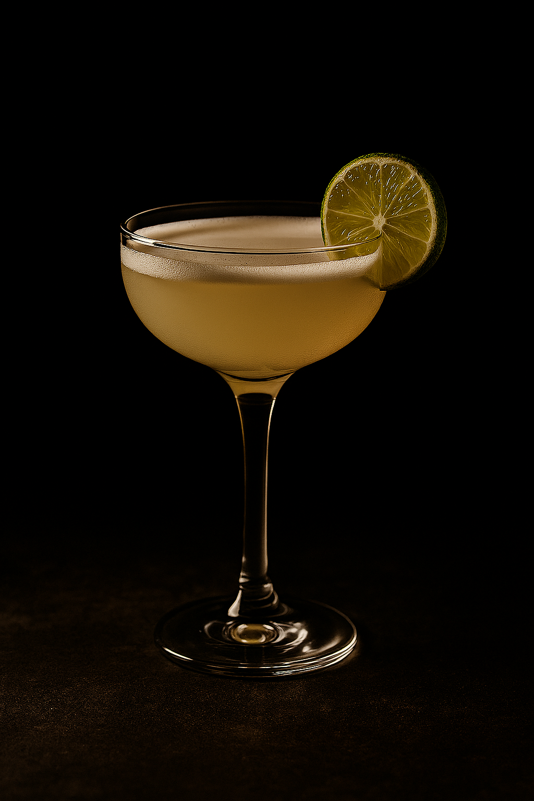
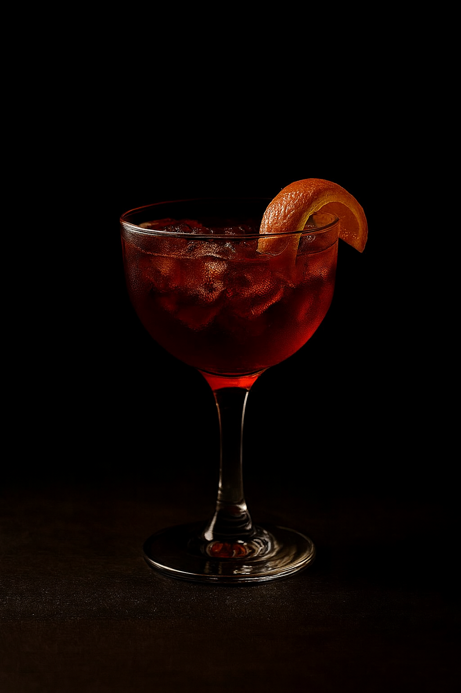
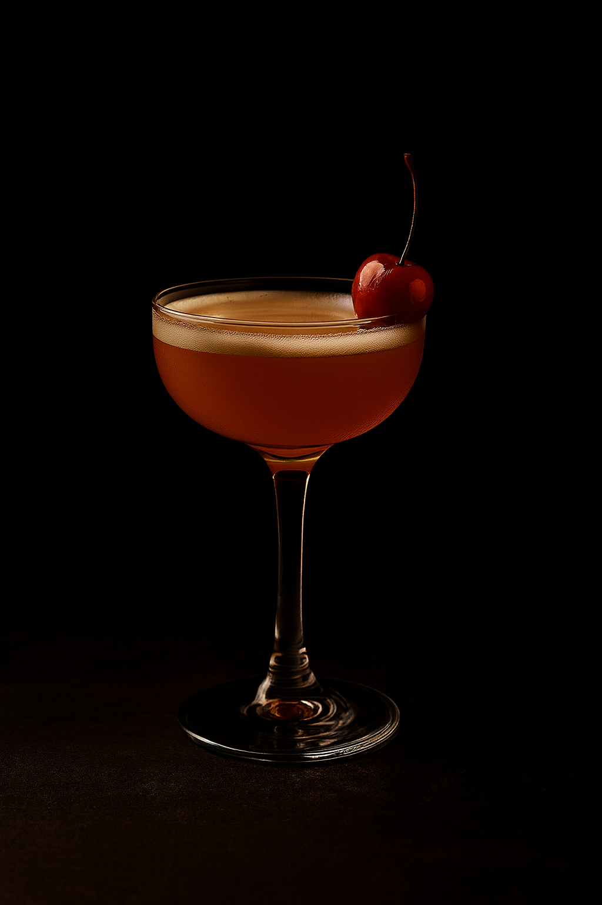
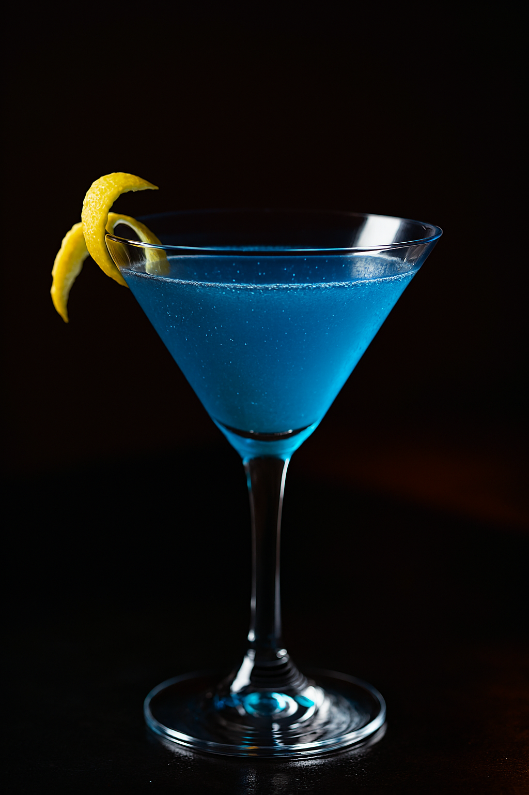

Cócteles desde la API
Busca por nombre o filtra por tipo de bebida. Los datos se cargan en tiempo real desde TheCocktailDB.
Empieza una búsqueda para ver resultados.
Los cócteles no son solo bebidas.
Son una forma de expresión, un gesto de estilo, una declaración silenciosa de quien sabe disfrutar. Cada mezcla bien pensada es una firma personal, cada copa servida con intención es una obra efímera. En el mundo de la alta coctelería, el lujo no se grita: se saborea.







